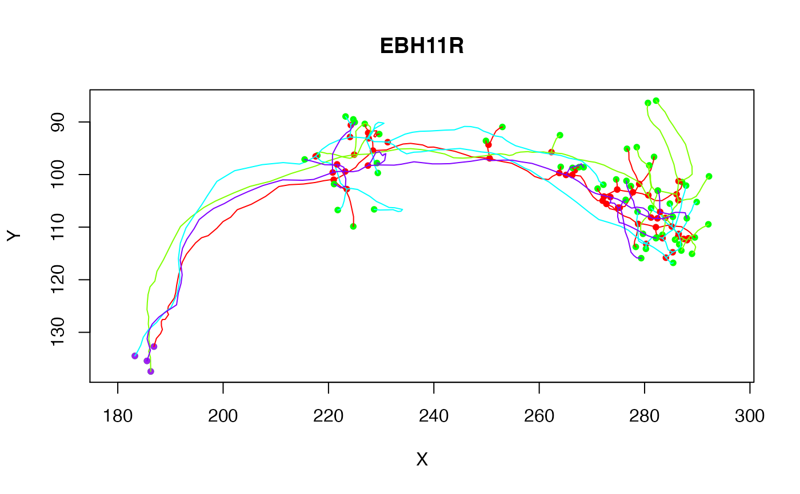
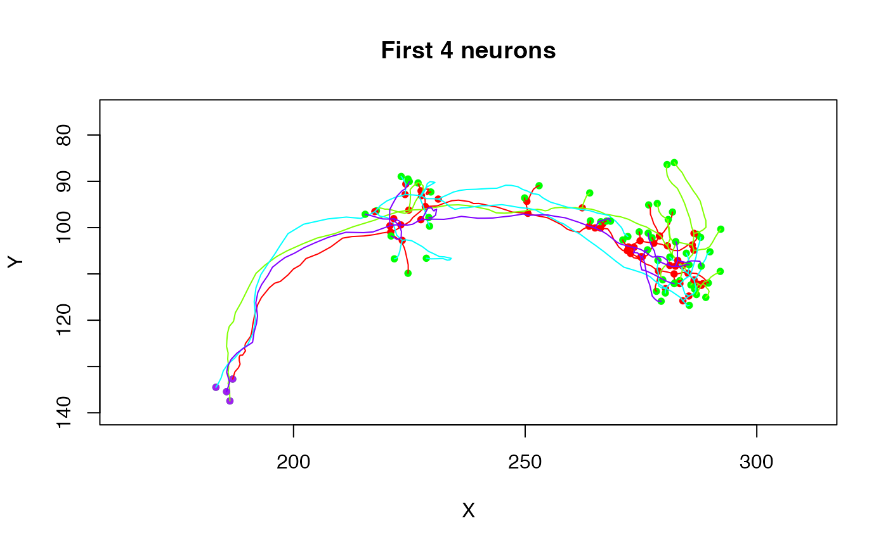
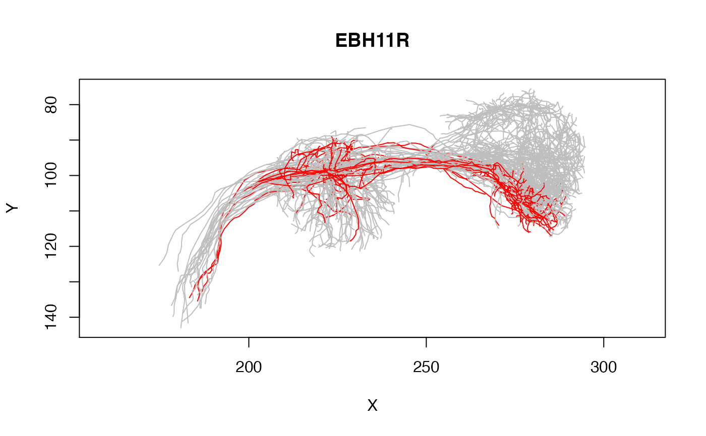
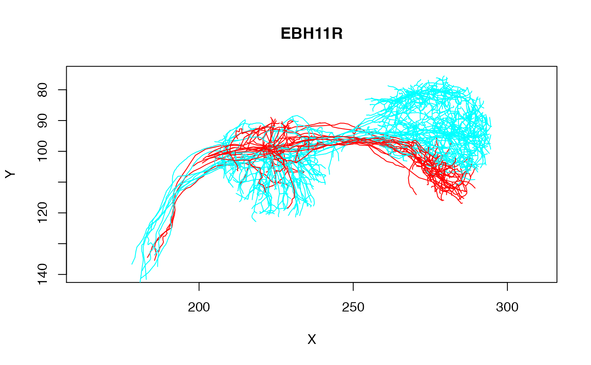

R/neuronlist.R
plot.neuronlist.Rd2D plots of the elements in a neuronlist, optionally using a subset expression
# S3 method for neuronlist plot( x, subset = NULL, col = NULL, colpal = rainbow, add = NULL, boundingbox = NULL, soma = FALSE, ..., SUBSTITUTE = TRUE )
| x | a neuron list or, for |
|---|---|
| subset | Expression evaluating to logical mask for neurons. See details. |
| col | An expression specifying a colour evaluated in the context of the dataframe attached to nl (after any subsetting). See details. |
| colpal | A vector of colours or a function that generates colours |
| add | Logical specifying whether to add data to an existing plot or make
a new one. The default value of |
| boundingbox | A 2 x 3 matrix (ideally of class
|
| soma | Whether to plot a sphere at neuron's origin representing the
soma. Either a logical value or a numeric indicating the radius (default
|
| ... | options passed on to plot (such as colours, line width etc) |
| SUBSTITUTE | Whether to |
list of values of plot with subsetted dataframe as attribute
'df'
The col and subset parameters are evaluated in the context of the dataframe attribute of the neuronlist. If col evaluates to a factor and colpal is a named vector then colours will be assigned by matching factor levels against the named elements of colpal. If there is one unnamed level, this will be used as catch-all default value (see examples).
If col evaluates to a factor and colpal is a function then it will be used to generate colours with the same number of levels as are used in col.
# plot one class of neurons in red and all the others in grey plot(Cell07PNs, col=Glomerulus, colpal=c(DA1='red', 'grey'), WithNodes=FALSE)# subset operation plot(Cell07PNs, subset=Glomerulus%in%c("DA1", "DP1m"), col=Glomerulus, ylim=c(140,75), WithNodes=FALSE)